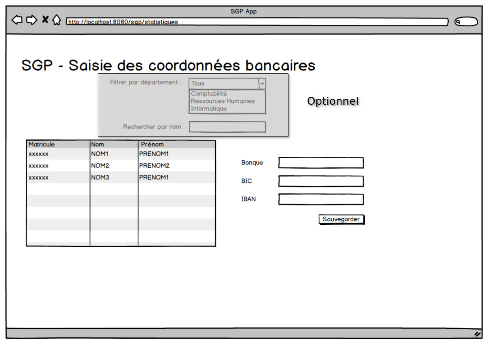

TP Web Api
Application Backend Gestion Personnel
- Créer une application Spring Boot sgp-webapi que vous sauvegardez un dépôt Github : sirh-gestion-personnel-webapi.
Ressource Départements
- Créer l'API Web GET /api/departements retourne la liste des départements au format JSON.
Ressource Collaborateurs
Créer les API Web suivantes :
GET /api/collaborateurs: retourne la liste des collaborateurs au format JSON.GET /api/collaborateurs?departement=[ID_DEPARTEMENT]: retourne la liste des collaborateurs au format JSON dont le département a l'identifiant ID_DEPARTEMENT.GET /api/collaborateurs/[MATRICULE]: retourne les informations d'un collaborateur.PUT /api/collaborateurs/[MATRICULE]: modifie un collaborateur (données envoyées au format JSON).GET /api/collaborateurs/[MATRICULE]/banque: récupère les coordonnées bancaires d'un collaborateur.PUT /api/collaborateurs/[MATRICULE]/banque: modifie uniquement les coordonnées bancaires d'un collaborateur.
Tester via Postman que les API fonctionnent.
Application Saisie de coordonnées bancaires
Les utilisateurs de l'application SGP ont souvent, après chaque série de recrutement, besoin de saisir massivement des coordonnées bancaires.
Nous allons créer une application qui permet d'effectuer une saisie rapide des coordonnées bancaires.
Dépôt Github
Créer un dépôt Github : sirh-saisie-coordonnees-bancaires.
Créer un clone de ce dépôt sur votre poste.
Outillage
- Si ce n'est pas déjà fait, installer la dernière version LTS de NodeJS (https://nodejs.org/).
- Pour vérifier si NodeJS est installé, tester la commande node comme suit :
node -v
npm -v
- Installer le serveur live-server :
npm i -g live-server
- Démarrer un serveur web. Pour cela, se rendre dans le répertoire sirh-saisie-coordonnees-bancaires et lancer la commande :
live-server
Si jamais vous souhaitez changer le port du serveur :
live-server --port=NUMERO_PORT
Application Web
- Créer une application indépendante (HTML / JS) et Bootstrap (maquette ci-dessous).
/sirh-saisie-coordonnees-bancaires
index.html
app.js
/bootstrap
...

- Implémenter le comportement suivant :
- A l'initialisation de l'application, la liste des collaborateurs est affichée.
- Le bouton sauvegarder permet d'enregistrer les modifications.
- Si une erreur s'est produite pendant la communication avec l'API Backend, afficher un message d'erreur.
- (Optionnel) Il est possible de filtrer la liste des collaborateurs par nom ou par département.